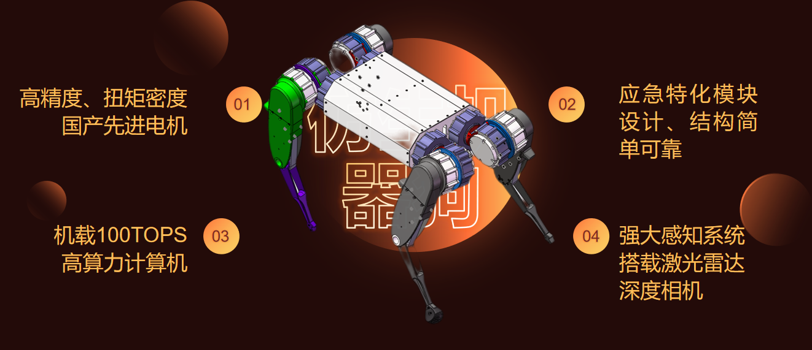
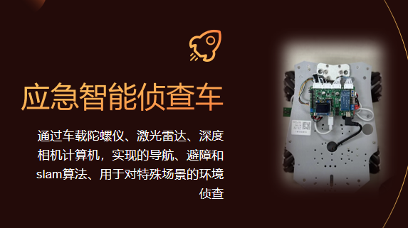
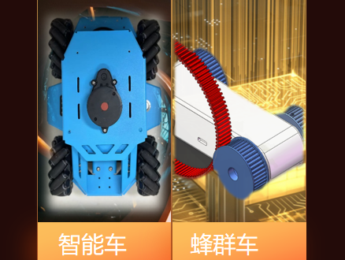

智慧机器 助力应急
机器人学是计算机科学与工程的跨学科分支，集成多领域技术，致力于设计帮助和协助人类的智能机器
Robot Operating System（机器人操作系统），为机器人开发提供灵活框架
以应用为中心，可灵活裁剪软硬件模块的专用计算机系统，是机器人控制核心
针对不同机器人结构进行机械设计及仿真，研发FOC等电机控制算法
即时定位与地图构建（SLAM）技术，实现机器人自主定位、导航与避障
聚焦应急场景，研发多款智能机器人产品，解决实际应用中的技术难题

搭载计算机、IMU、激光雷达的四驱麦克纳姆轮小车，实现基础导航和SLAM算法，用于对初学者的训练学习
通过车载陀螺仪、激光雷达、深度相机计算机，实现导航、避障和SLAM算法，用于特殊场景的环境侦查


第十八届全国大学生智能汽车竞赛分赛区选拔赛讯飞智慧农业组 三等奖
获奖人：侯景皓 | 2023年
第十三届MathorCup高校数学建模挑战赛本科生组 三等奖
获奖人：侯景皓、陶志乐、潘卓霄 | 2023年
第七届全国高校商务英语竞赛决赛非专业组 特等奖
获奖人：侯景皓 | 2023年
亚太地区数学建模竞赛本科生组 三等奖
获奖人：侯景皓、潘卓霄、陶志乐 | 2022年
"先控杯"2023年河北省大学生节能减排竞赛 三等奖
作品：零碳排放边缘工业粉尘废气监测及处理系统 | 2023年
2023年"挑战杯"河北省大学生课外学术科技作品竞赛 三等奖
作品：智慧抚育车智能监控与智能系统 | 2023年
乘势而上 再接再厉，在现有基础上持续优化升级，追求技术突破